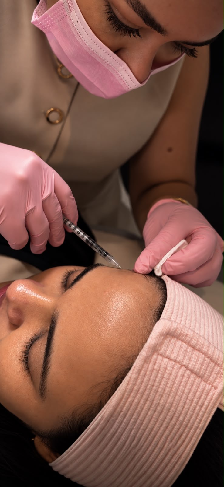
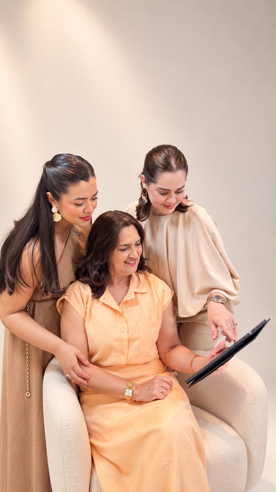
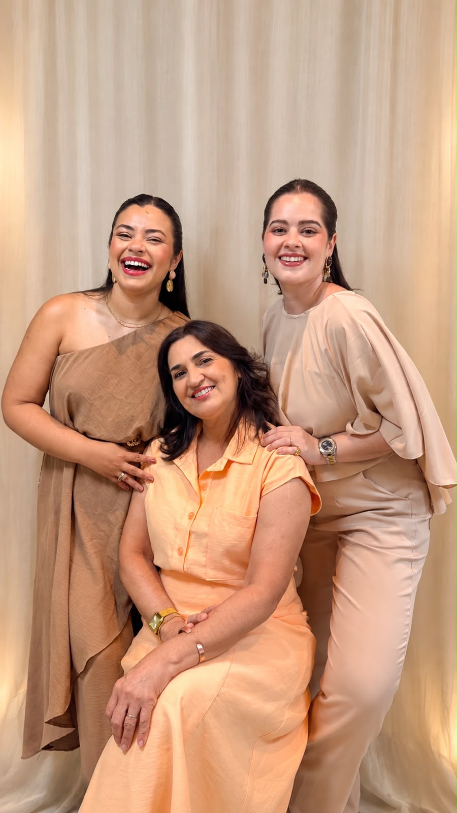
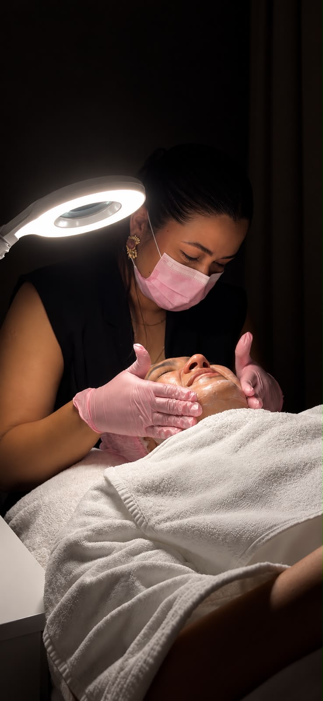
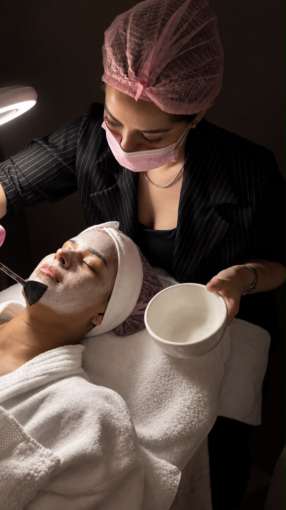
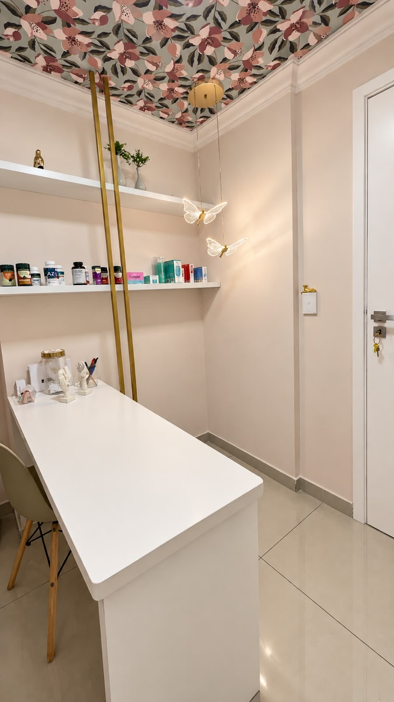
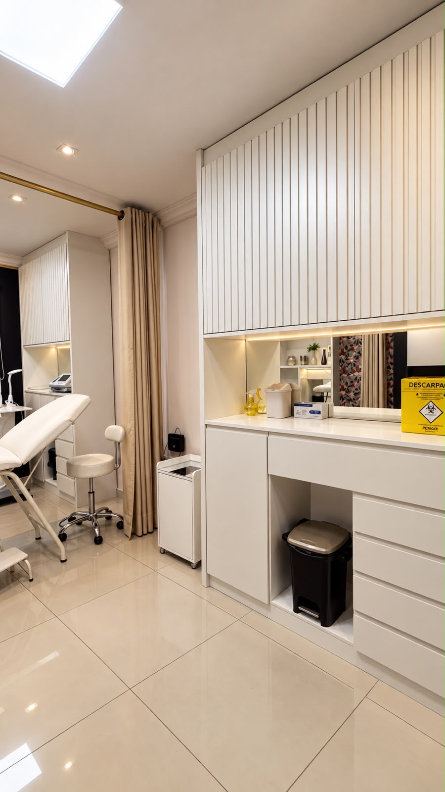
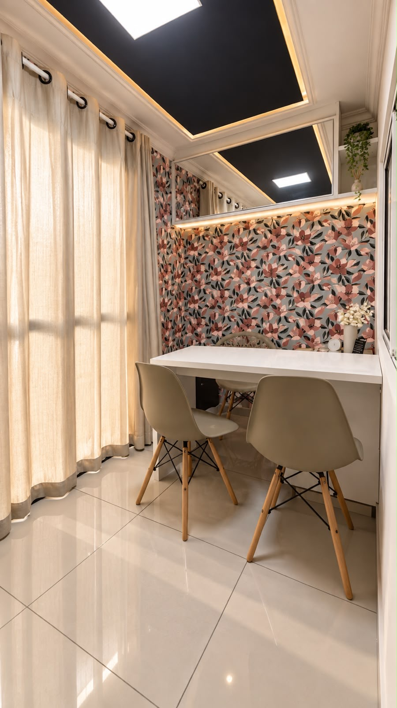

Facial • Rugas e expressãoBotox
Suaviza linhas de expressão e previne marcas, mantendo leveza e movimento natural do rosto.
Expressão descansada, sem perder a naturalidade
Tratamentos personalizados para valorizar seus traços, sua pele e sua confiança — com segurança, naturalidade e acompanhamento profissional.

Equipe Assensi
Vanessa • Josilene • ThaisAvaliação honestaIndicação apenas do necessário
NaturalidadeRealce sem exageros
BiossegurançaProdutos e protocolos seguros
AcompanhamentoDo plano ao pós-tratamento
Tratamentos
Cada protocolo respeita suas características, seus objetivos e a sua individualidade — rosto, corpo e nutrição em um plano só seu. Toque em um tratamento para conversar sobre ele.
Suaviza linhas de expressão e previne marcas, mantendo leveza e movimento natural do rosto.
Expressão descansada, sem perder a naturalidade
Procedimentos faciais personalizados para realçar contorno, firmeza e hidratação da pele.
Contorno sutil e pele mais firme
Protocolos para manchas, poros e luminosidade — o glow saudável que todo mundo percebe.
Pele luminosa e tom uniforme
Tonificação muscular, protocolos para flacidez e gordura localizada com acompanhamento contínuo.
Contorno corporal mais definidoReduz inchaço, melhora a circulação e potencializa resultados de protocolos corporais.
Sensação imediata de levezaAtendimento nutricional e protocolos para emagrecimento saudável, sem dietas extremas.
Equilíbrio e energia de dentro para foraNossas 3 áreas de atuação
A clínica atua em estética facial, corporal e nutrição & saúde da mulher — cada frente com protocolos próprios, mas sempre pensadas juntas para um resultado natural e contínuo.
As especialistas
Dra. Josilene BezerraOi, sou Dra. Josilene Bezerra, nutricionista integrativa funcional e especialista em fitoterapia. Sou casada, mãe de dois filhos, cristã e apaixonada pela vida, pelo natural e por tudo que envolve saúde e bem-estar. Sempre gostei de cuidar de forma completa — alimentação, hábitos, sono e movimento. No meu atendimento gosto de conhecer cada pessoa de verdade, entender sua rotina e o que o corpo comunica. Acredito que cada pessoa é única e o cuidado precisa ser individualizado.
Dra. Thaís AzevedoOi, sou Dra. Thaís Azevedo, fisioterapeuta, católica, mãe de um cachorrinho e apaixonada pela vida, viagens e literatura. Sempre gostei de beleza, maquiagem e skincare — após enfrentar acne adulta mergulhei no estudo da pele e me encontrei na Fisioterapia Dermato-Funcional. Mais que procedimentos, acredito no autocuidado, amor-próprio e beleza natural que valoriza cada traço. Gosto de compartilhar conhecimento e fazer cada paciente entender que cuidar de si é uma forma de carinho.
Dra. Vanessa BezerraOlá! Sou Dra. Vanessa Bezerra, fisioterapeuta, esposa, cristã e mãe de duas gatinhas. Amo viajar, culturas diferentes e observar o belo. Desde adolescente amava maquiagem e cuidado — dos blogs à criação de conteúdo. Uni esse olhar à Fisioterapia Dermatofuncional, onde me encontrei: cuido de pessoas com meu olhar para a beleza. Amo receber minhas clientes, conhecer suas histórias e fazê-las se sentirem bem cuidadas. A Assensi nasceu disso — do meu jeito de cuidar e de enxergar a beleza.
Especialista 1 de 3
Resultados
Arraste o controle para comparar. Cada caso é único — o plano é sempre individual.
 AntesDepois
AntesDepois
Jornada
Da primeira conversa ao acompanhamento: você sabe exatamente o que esperar.
Escuta, análise facial/corporal e entendimento dos seus objetivos e histórico.
30–40 minPlano personalizado com prioridades, sessões, valores e prazos claros.
Sem surpresasExecução com biossegurança, conforto e técnica refinada para o natural.
Com calmaRetorno, fotos comparativas e ajustes para manter e evoluir o resultado.
De pertoExperiência da clínica
Recepção acolhedora, consultório impecável e detalhes que acalmam — do cheiro ao atendimento.

Recepção
Consultório
Detalhes & cuidadoDepoimentos
Depoimento 1 de 2